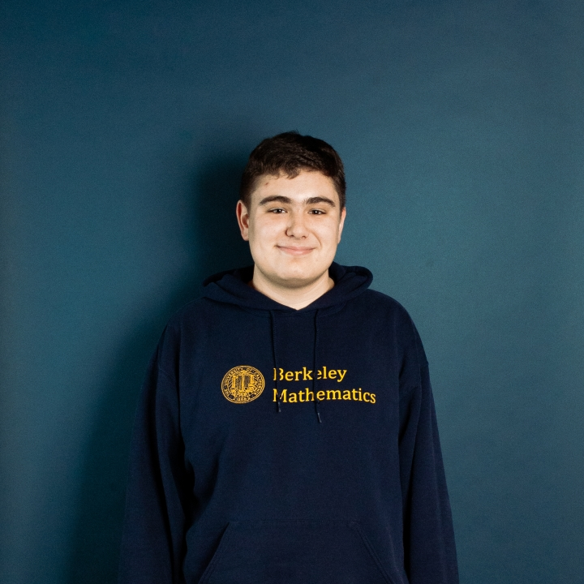

My name is Andrew DeLapo. I recently graduated from the University of California, Berkeley in the class of 2020 with a major in mathematics and a minor in computer science.
I am an aspiring mathematician. I am most interested in mathematical logic, which includes model theory, recursion theory, and set theory. I also have programming and software engineering experience.
I am currently a Code Coach at theCoderSchool in Fremont.
My GitHub profile is here. My email is adelapo@berkeley.edu.
I have completed graduate-level courses in model theory and recursion theory. I wrote my senior honors thesis, Bernoulli Randomness and Biased Normality, under the supervision of Professor Theodore Slaman. The paper is currently under review for publication, and it is available as a pre-print on arXiv.
Those who are interested in dynamical systems are encouraged to see the GitHub repository for the IFS Code Visualizer program I wrote as part of my senior honors thesis. My thesis ends on a few open questions regarding iterated function systems and randomness, and the IFS Code Visualizer allows for computational exploration of those questions.
Below is some JavaScript code generating the Barnsley Fern using four different sequences. This code runs in the browser using the p5.js library for JavaScript. The code can be viewed here. The visualization demonstrates that the speed at which the Barnsley Fern is generated can vary for different sequences, even though the sequences are all biased normal to the same probabilities. It is unknown (to me, at least) whether the same fractals are generated if the sequences are all biased normal to the same probabilities. The biasing algorithm from my paper is also implemented in the code to bias Champernowne's, Copeland-Erdos's, and Besicovitch's sequences.
I have coding experience both academically and from industry. Below is a full list of languages I have used, ordered from those with which I have the most experience to the least.